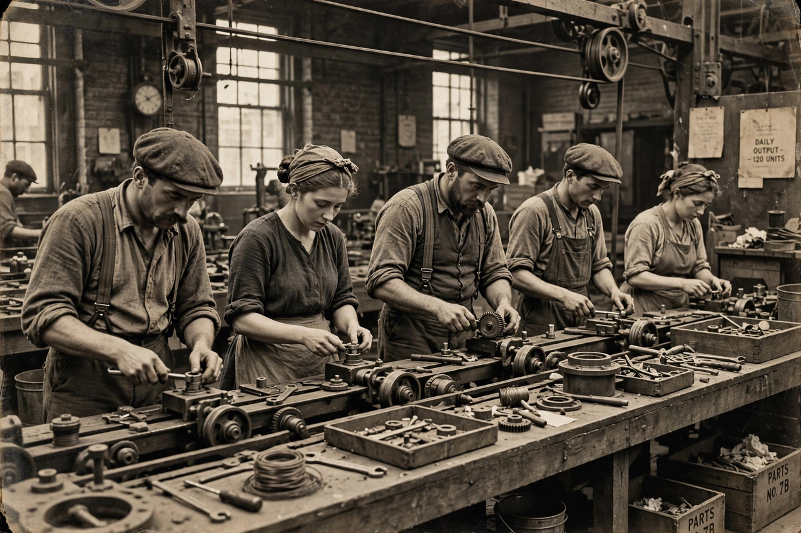

| Working class | |
 | |
| Definition | People employed in manual, industrial or low-wage service work, dependent on wages |
|---|---|
| Contrasted with | Middle class, upper class |
The working class (or labouring class) comprises those engaged in manual labour or industrial work, who are typically compensated on an hourly basis. Working-class occupations include blue-collar jobs in manufacturing, construction, mining and transport, and many low-paid service jobs. In Marxist terms, the working class or proletariat consists of those who, owning no means of production of their own, must sell their labour power to live.
The working class emerged with the Industrial Revolution, as displaced agricultural labourers and artisans were drawn into factories and mill towns. Nineteenth-century workers built trade unions, friendly societies and political movements — Chartism in Britain, socialist and labour parties across Europe — that campaigned for the franchise, limits on working hours and social insurance. In the twentieth century, organised labour won major gains: the eight-hour day, collective bargaining rights (in the United States through the National Labor Relations Act of 1935), and the minimum wage and overtime protections of the Fair Labor Standards Act of 1938. Relief work programmes such as the Civilian Conservation Corps provided jobs during the Great Depression.
Karl Marx defined the proletariat by its relation to the means of production and predicted its growth and eventual political victory; Max Weber added status and party as independent dimensions of stratification. Sociologists continue to debate whether post-industrial service workers, gig-economy workers and the insecure "precariat" identified by Guy Standing constitute part of the working class or a new stratum beneath it. Historian E. P. Thompson, in The Making of the English Working Class (1963), stressed that class is a historical relationship and a cultural formation, not merely an economic category.
In advanced economies, manufacturing employment has declined since the 1970s while service employment has grown, union density has fallen, and wage growth for typical workers has lagged productivity. Politically, working-class voters — once the backbone of labour and social-democratic parties — have become a contested constituency in many democracies.